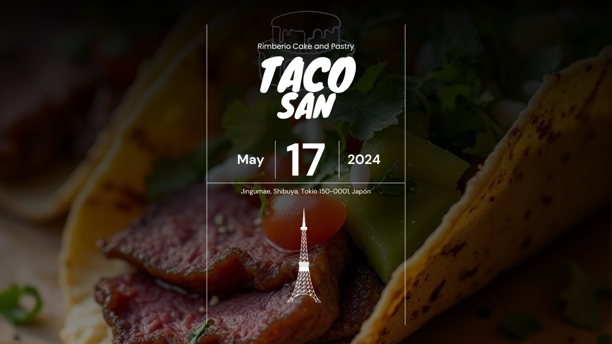

Realiza tu reservación
¡Bienvenido a Taco-San!
Donde el arte culinario japonés y mexicano se fusionan en cada plato.



Tepanyaki con Salsa de Jalapeño
Deliciosas opciones de teppanyaki con un toque picante.
¥1,500
Encuéntranos
Contáctanos
Email: contacto@taco-san.com
Teléfono: +52 123 456 7890